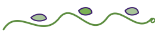

Dotted with lemon pip
· primary section divider

Curling vine
· used between Tend the Roots and Bear Fruit
Wavy underline
· drawn beneath a key word inside a headline
CSS dotted rule + lemon pip
· lightweight alternative for inline use